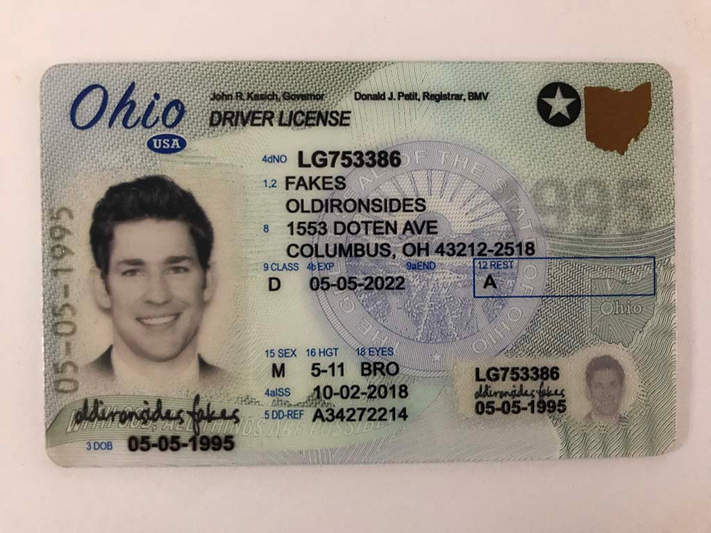

THIS ONE IS FAKE
It took you 15 seconds to take the wrong decision
On an average, the "security expert" takes 3 seconds per document to identify if the document is real.
What can Socure do in those 15 seconds?
WHAT CAN SOCURE DO IN 15 SECONDS?
Run Security Tests on Visual and Pattern Analysis
Correlate the data from the front and the barcode
Check for digital Screens and Headshot integrities
Compare with sample image from the internet